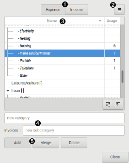

Using categories dialog

 Category name
Category name
type a new category name here and press return to add.
 Subcategory name
Subcategory name
- select the category to add subcategory to in the category
list
- type a new subcategory name here and press return to add.
 Categories list
Categories list
display the category and subcategory, sorted alphabetically.
 Buttons
Buttons
| Is income | when checked, this set the category to be an income category (for sort purpose). |
|---|---|
| Add | add category/subcategory if the relative category name is not empty. |
| Remove | remove the selected branch or categories, i.e. if a category is selected, all subcategories will be removed. |
| Edit | open a dialog to edit the selected category |
 Buttons
Buttons
| Import | Import and merge some categories from a csv file. |
|---|---|
| Export | export the entire categories list into a csv file. |
Please refer to csv file format for the file description.